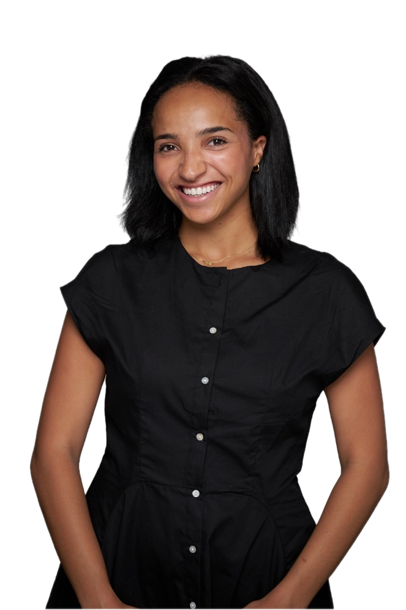

Meet the founder
The best events feel effortless. The work behind them is anything but.

I'm Arielle Warren, a New York-based operator, founder and community builder. My background spans venture capital, company building and strategy, but the through line has always been the same: bringing the right people together and making the details behind the experience feel easy.
I've worked inside lean teams, built companies from the ground up and brought founders, operators and investors together in rooms designed for real connection. I know what it feels like to have a full calendar, a big idea and no extra set of hands to carry it through.
That is why I created Pallas Taylor. I step into the gap between the plan and the actual event, keeping vendors aligned, guests cared for and the day moving so the internal team can be present in the room.
I love the invisible work that changes how an event feels: the thoughtful guest list, the clear timeline, the last-minute save and the small detail no one notices because it went right. Whether it is an intimate breakfast, a founder happy hour or an LP dinner, my goal is simple: make it feel considered, calm and worth showing up for.
"I want your guests to feel cared for and your team to feel relieved."
Operations + network / Founder experience / Strategy background / New York City
A capable pair of hands, right when you need them